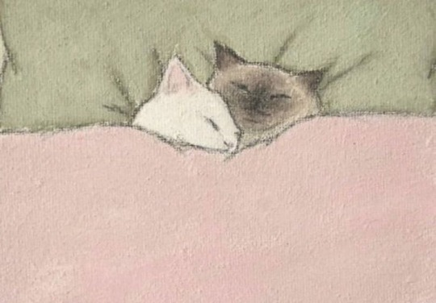

Anna Williams
hello (at) anna-maths (dot) xyz

About Me
I am a maths and computer science student at the University of Birmingham. Current interests include Category Theory, Type Theory, Proof Assistants, and Domain Theory. In my spare time I enjoy crochet, cooking and celeste.
If you want to find me elsewhere I am on Mastodon, and Spotify.
Blog - (subscribe via RSS)
Here is a list of my blog posts: